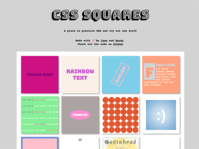
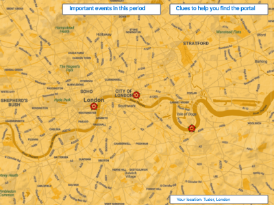
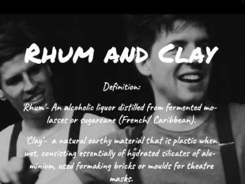

Skills
Here are the languages, frameworks and technologies I have worked with the most.
AJAX // AngularJS // APIs // Bootstrap // CSS // Git // HTML // JavaScript // jQuery // Node.js // Photoshop // PostgREST // SCSS // Vue.js // WordPress
Work
Scroll down to have a look at what I've made! I have designed and built sites, apps and APIs from scratch, as well as working with different content management systems. Building with teams has taught me the ways of Git and Github as well as
the importance of good communication and planning.

CSS Squares
A simple static site built with Sarah Penney to experiment with new CSS techniques and share what we've found out.
Built with:
HTML | CSS
See site
See code

Prop Swap
An app for theatres to list and borrow props. With RESTful routes, full CRUD actions, and authentication.
Built with:
Ruby | Ruby on Rails | AngularJS | Bootstrap | HTML | SCSS | Google Maps API
See site
See code

Bored
A platform for pinning images and videos. With authentication, search and follow functions and full RESTful routes.
A group project built with:
Mongo | Express | AngularJS | Node.js | Bourbon | Neat
See site
See code

Bowie's in Space
Solve the interactive card game to recieve your message from the Starman.
Built with:
HTML | CSS | Javascript
See site
See code

Time Travlr
A fun, educational game using Google Maps and Wikipedia APIs to bring history to life.
A group project built with:
JavaScript | jQuery | Ajax | Node.js | Express | Google Maps API | Wikipedia API | Bootstrap
See site
See code
Broadcast Digital Awards
A site to showcase award winning online content. Built in close collaboration with designers and marketers to optimise branding and user journeys.
Built with:
WordPress | Salient
See site
Broadcast Awards
A promotional site for an awards ceremony celebrating the best of British television.
Built with:
WordPress | Salient
See site

Rhum and Clay
The theatre company wanted a visual site that they could easily update themselves, so I used a provider with plenty of support.
Built with:
Squarespace
See site